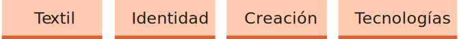
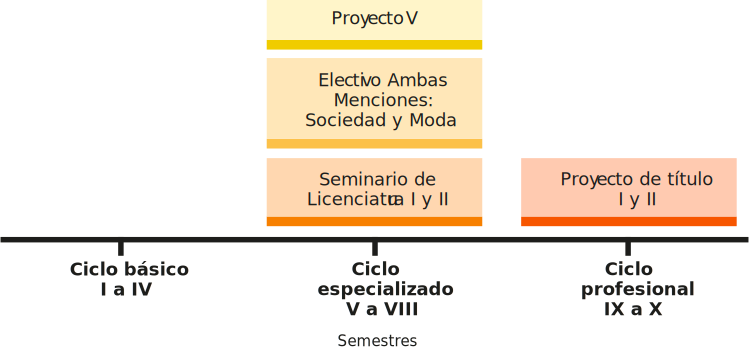
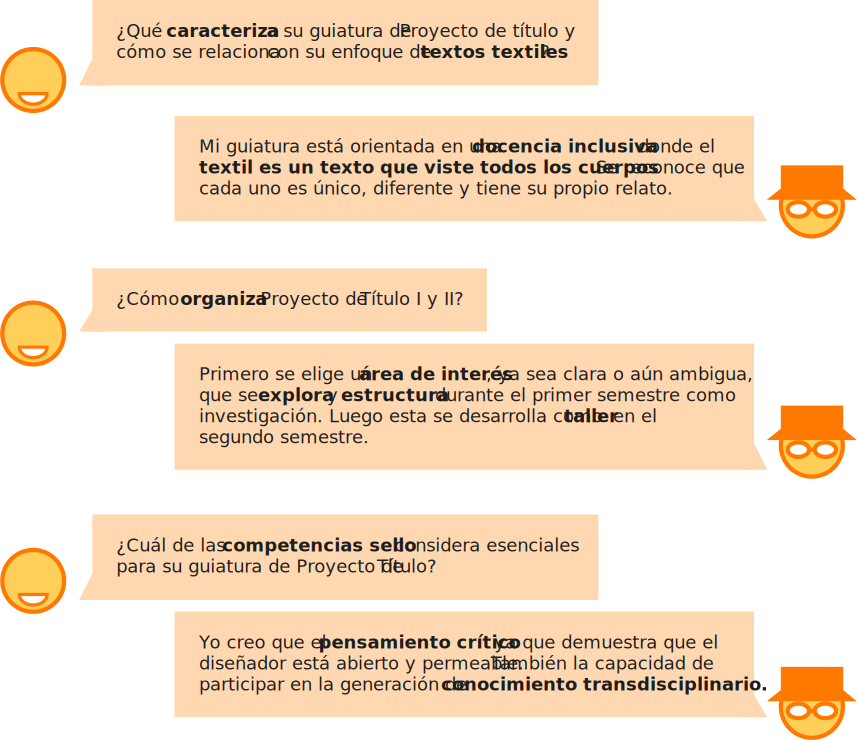
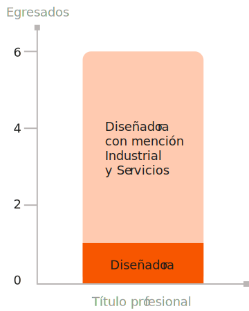

Alfredo Mora Briones
Contacto: alfredo.mora@uchile.cl
Docente Invitado
- Grados/Títulos:
- Diseñador en Comunicación visual, Universidad Tecnológica Metropolitana
- Magíster en Artes Mediales, Universidad de Chile
- Enfoque de guiatura
- Se promueve una investigación situada con libertad temática y mirada crítica, con énfasis en el marco metodológico y desarrollo proyectual desde perspectivas tecnológicas y críticas a los medios.
Pablo Núñez Gutiérrez
Contacto: pablo.nunez@uchilefau.cl
Profesor Asociado en Categoría Académica docente
Adscrito al Departamento de Diseño
- Grados/Títulos:
- Licenciado en Comunicación social, Universidad de Chile
- MA Master of Fashion Design, Domus Academy Milán, Italia
- Magíster en Pensamiento Contemporáneo: Filosofía y pensamiento político de la Universidad Diego Portales
- Enfoque de guiatura
- Textos Textiles: Se indaga en las posibles narrativas que se pueden describir, relacionar e interpretar sobre el cuerpo, el textil y la indumentaria con un determinado contexto socio-político y cultural.
Áreas de interés
Asignaturas impartidas: Durante los ciclos formativos de la carrera
Conociendo al profesor: Preguntas y respuestas
Areas prioritarias en investigación y creación en la Facultad de Arquitectura y Urbanismo:
- Área Prioritaria 8: Fenómenos sensibles, perceptuales y corporales en el entorno
Lineas de investigación del Departamento de Diseño:
- Diseño centrado en la persona
- Materiales, Tecnologías y procesos
- Morfología, Percepción y Color
- Identidad y Patrimonio
Énfasis del Ciclo 3 del Plan de Estudios del Programa Académico:
- Innovación
- Investigación
- Creación
¿Qué título profesional han obtenido los proyectos de título II guiados por Pablo Núñez Gutiérrez?
¿Cómo se relaciona su nota aprobatoria previa, de Proyecto de Título I, con la nota definida por la comisión examinadora de Proyecto de Título II?
¿Qué parte de las inscripciones en la asignatura de Proyecto de Título II con se han convertido en Exámenes de Título aprobados?
| Egresado/a | Título | Semestre | Proyecto | Nota |
|---|